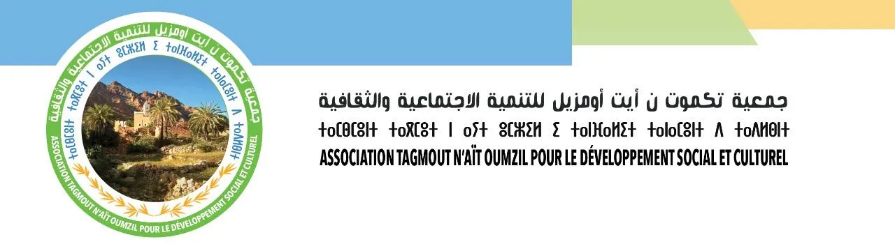

Notre histoire, nos valeurs et l'engagement de notre bureau exécutif
Depuis sa fondation le 23 Juillet 2000, l'Association Tagmout n'Aït Oumzil incarne un engagement collectif et solidaire au service du développement durable.
Notre gouvernance transparente et la mobilisation des habitants témoignent d'une capacité avérée à concevoir, financer et exécuter des projets structurants dans les domaines de l'eau, de l'éducation, du désenclavement, de la sauvegarde de l'environnement et de nos traditions ancestrales.
Composé de membres, hommes et femmes dévoués, ainsi que d'un comité de contrôle, nous travaillons de concert pour améliorer les conditions de vie des habitants du Douar Tagmout n'Aït Oumzil et de la Commune d'Ammelne.

Président de l'Association Tagmout n'Aït Oumzil
De prime abord, je tiens à remercier toutes les personnes qui ont contribué de près ou de loin à la fondation de notre Association depuis le 23 Juillet 2000 et à l’élaboration de ce Site Web.
Nos grands-parents et parents se connaissaient tous intimement (frères & sœurs du même arrière-grand-père feu Ahmed Oumni nommé ‘’Aarab’’ car venu d’ailleurs et étranger au village). D'une génération à une autre, leurs connaissances se transmettaient oralement.
La deuxième partie du XXème siècle a vu une grande majorité des habitants de Tagmout n’Aït Oumzil migrer vers les autres villes du Royaume, mais aussi vers les pays du Monde délaissant ainsi leurs terres, leurs maisons et le village de leurs ancêtres à la recherche d’un mieux-être.
Nous, les adultes, enfants et petits-enfants de Tagmout n’Aït Oumzil devons une grande reconnaissance à nos grands-parents et parents d'avoir fait ce choix intelligent qui s'inscrivait dans le sens de l'histoire en vue de garantir une vie meilleure à leurs descendants qui sont devenus Docteurs, Cadres, Professeurs, Médecins, Ingénieurs, Chefs d'Entreprises, Commerçants etc. .
Il est de notre devoir aujourd’hui et demain Inchaalah de préserver, d'enrichir et de léguer cet héritage à nos enfants afin qu'ils puisent du passé de leurs ancêtres les forces nécessaires pour réussir leur avenir.
C'est à la mémoire de nos grands-parents et parents que nous dédions ce Site Web et son contenu pour se les rappeler, sauvegarder leur mémoire et continuer leur œuvre tout en permettant à toutes les personnes et familles originaires de Tagmout n’Aït Oumzil, notamment les jeunes et les futures générations, de connaître leur origine et ce, afin de mieux participer individuellement ou collectivement au développement de leur village qui doit être durable, integrated et bien organisé.
La participation et la collaboration de tout un chacun pour alimenter, enrichir par ses remarques et observations cette œuvre contribuera fortement à entretenir davantage les relations et contacts des descendants de notre village.